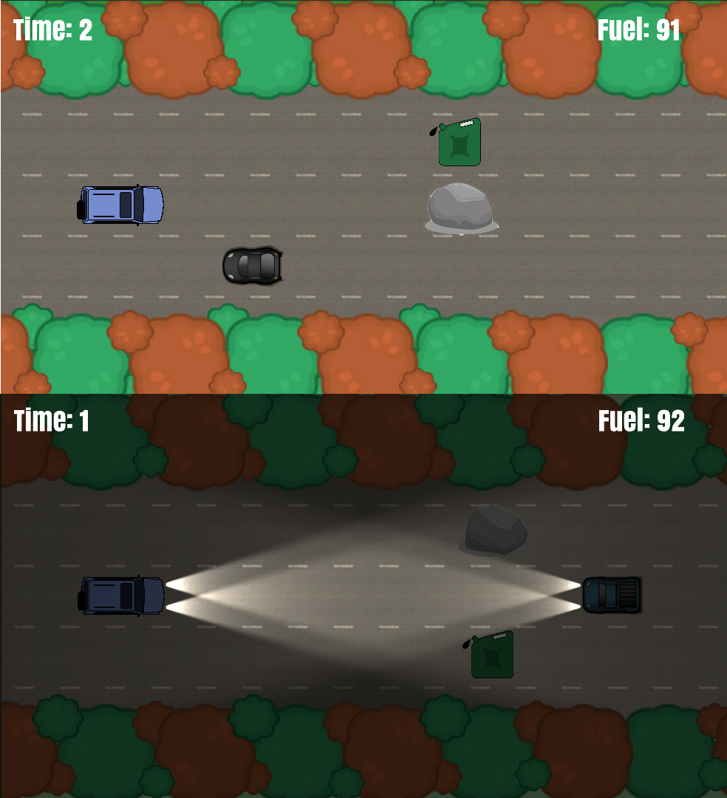

Hazard Highway
For my Scientific Computation masters, I did a module called Software Engineering Management, which was aimed at teaching the real-world implementation of coding projects. A sizable portion of the coursework was a group project, where a team of us were tasked with developing a video game in Unity, within a handful of weeks.
As a team, we had no previous experience with the software, and were intentionally grouped such that none of us had the same academic background, and different skill sets. We had to learn how to use the software, how to work with each other, and how to design and implement a software engineering project with a scope that none of us were familiar with.
The module had a focus on Software Engineering methodologies & organisational practices. We used Scrum to manage the project, and came together in weekly sprints that I directed and organised. We used these to make sure that everyone had something to do that complimented their particular skills, and to keep the project on track on a weekly basis. The project was ultimately successful, and we were able to demonstrate a high quality prototype at the end of the allotted period.
Planning & Design
In the first session, the team got to know each other and our backgrounds to get a feel for how everyone would be able to contribute to the project. Afterwards, we had a brainstorming session about the game, which included research into the types of games that were popular with our demographic. Eventually, we settled on the concept for a top-down driving game, where a car would avoid obstacles on the road by speeding up, slowing down and changing lanes. This concept would be simple, but naturally extendable, with the potential for lots of different features, so there was always room for extension depending on how efficiently we were able to work.
We operated according to a scrum framework, and I took on the role as scrum master. I would coordinate and lead weekly sprints, and attempted to direct the team’s individual strengths towards parts of the project that would make them the most effective. Additionally, I worked with other members of the team who were not as experienced with programming to help them get up to speed with the kind of work that we needed to do, on top of designing the bulk of the game’s logic.
We tracked our progress with a number of software applications. Notably, we used slack to communicate outside of physical meetings and trello to generate kanban boards, used to keep the team up to date with things that still needed to be done. More office-like programs, such as and google sheets/docs were used to keep track of our progress, generate gantt charts and prepare our presentation for the end of the coursework. We also used these logs to generate tests for new features as they were added, ensuring we were keeping on top with how scripts and game elements would interact with each other.
Implementation
The game was designed in Unity, which incorporates scripts that are written in C#. We began by adding a stationary premade car asset onto a road, which then moves along that road. For various reasons, we decided it would be easier for the car to technically remain stationary, and for the road to move behind it, to give the illusion of the car driving. Once the base was designed, we added in behaviour for some rocks that would follow the road for the player to avoid. We also added movement controls for the player, to allow them to change lanes, and move forwards and backwards along the road.
 The finished product, operating in 'normal' and 'Night' mode. Next, other drivers were added, which had similar movement to the player car, but move at variable speeds and change lanes if they’re about to hit a rock. Other members of the team were working on the fuel counter and pickups, designing unique models and finding music/additional material for the game. A menu was also added, and other small user interface elements.
A great deal of attention was paid to small details throughout the project to make sure it was as good as it could be. Testing and foresight was a large part of the process, understanding and pre-empting possible bugs that we would not have considered by adding features in a modular way. Additionally, attention to detail was paid to the movement to get it as fluid as possible. For example, directional controls on the lane changing mechanic were fine tuned so that you can hold them out to change lane twice, but this won't happen accidentally. Other small touches like making the cars turn towards the lane they are changing into were added give a higher level of authenticity to the movement.
The finished product was functional and presented with great success on the hand in. The night before, I spent an additional block of time to design a ‘night mode’ for the game, where vision would be greatly impaired and the driver would have to use their headlights.
Play
The finished effort can be played below on desktop devices. I'm hoping to build on this a little bit more, fix a few of the bugs that are still present, and add a few more features. Given the timeframe we had to work with, I'm still very happy with what we were able to create. It was received very well by the examiners, and in particular they praised my efforts working towards the end of the project towards additional features and general playability.